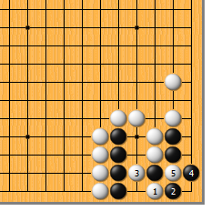
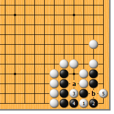
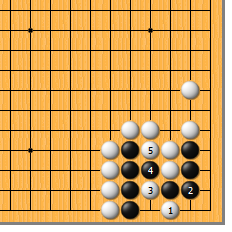
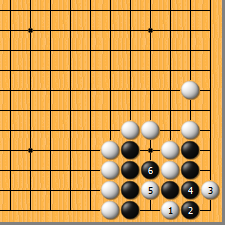
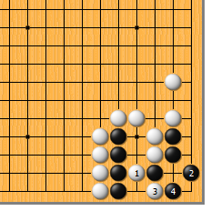
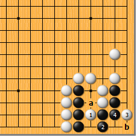
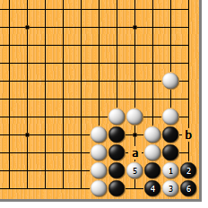

|  |  | |
| 图1 先公布答案。白1夹，妙手！黑2如虎，白3挖打，黑4做眼为最佳应手，白5提成劫。先说一下黑2如于3位粘为什么不行：白可于5位断，黑净死。 | 图2 再仔细分析一下。白3挖打时，黑4提行不行？如此，白5的点是令人自豪的手筋！黑如a位提，白b位断后黑不活；黑如b位粘，白a位粘后黑也不活。实在是妙手啊！
| |
|
 |
 | |
图3 白1夹时，黑2如粘，白3同样挖。黑4断吃时，白5反打，正好吃倒扑！
| 图4 白1夹，黑2虎后，白3如果先点，次序错误。黑4粘，白5再挖时，黑可于6位打，净活。白3、黑4如果不先交换，白5挖时黑来不及走6位打。 | |
|
 |
 | |
图5 白1先挖如何？黑如2位虎，白3打，黑4做劫，结果相同。然而，黑2有更妙的应法……
| 图6 白1挖时，黑有2位立的强手。白3如点，黑4冷静地粘。接下来，白如a位粘，黑可于b位扑吃胀牯牛而活。白3如先于a位粘，黑可于3位尖活棋。
| |
|  | 您的高见 | |
图7 白1断、3长，虽也是常用手筋，此地却不适用。白5打，黑6提后，白如a位粘，黑可于b位做活。 |